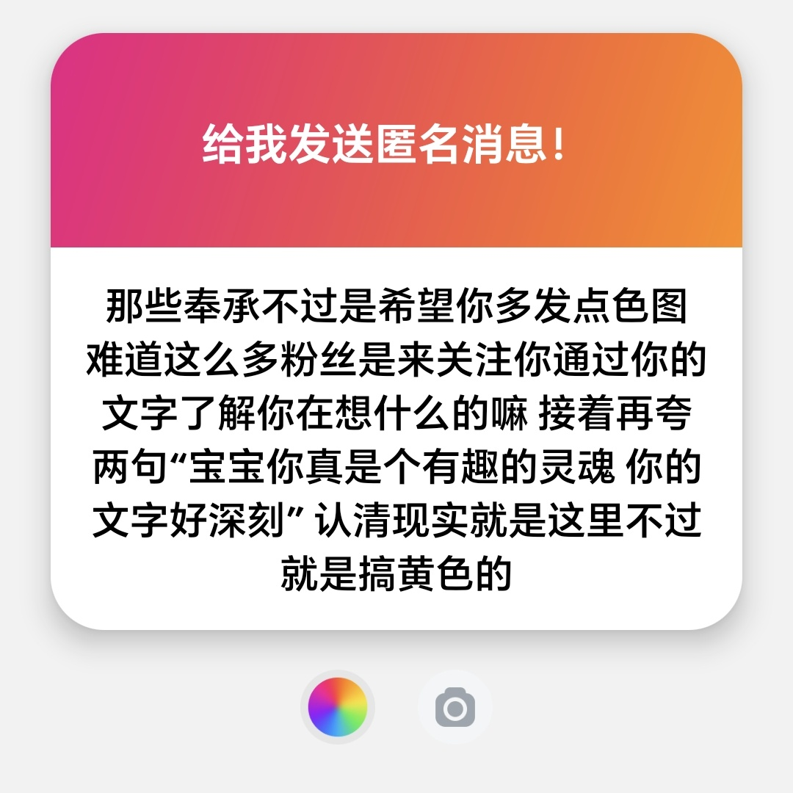

小小麦咪喵喵喵
@XIAOMAIMI_miao
@sweetiekittylol 咋就不能是通过文字了解在想什么了，少他妈把自己这种脑残群体当成大部分，想看色图就去关注专门天天发色图的黄推啊，又不给钱天天既要又要的，真把自己当大爷了。。。文字才是最吸引人的好不。。。

有时变成你下班路上遇见的小猫
@sweetiekittylol
很奇怪，到底是谁搞不清楚现实啊？为什么要把互关之间的互动说成是奉承？很多人把推特当成是看黄色的软件，我能理解，但我发什么是我自己的事情，我也不关心关注我的人是出于什么样的目的，因为我发什么而关注我或取关我都无所谓。少以己度人了，你是想通过这样的方式让我多发点色图吗？那就给我打钱啊 https://t.co/ComhcwjS3Y